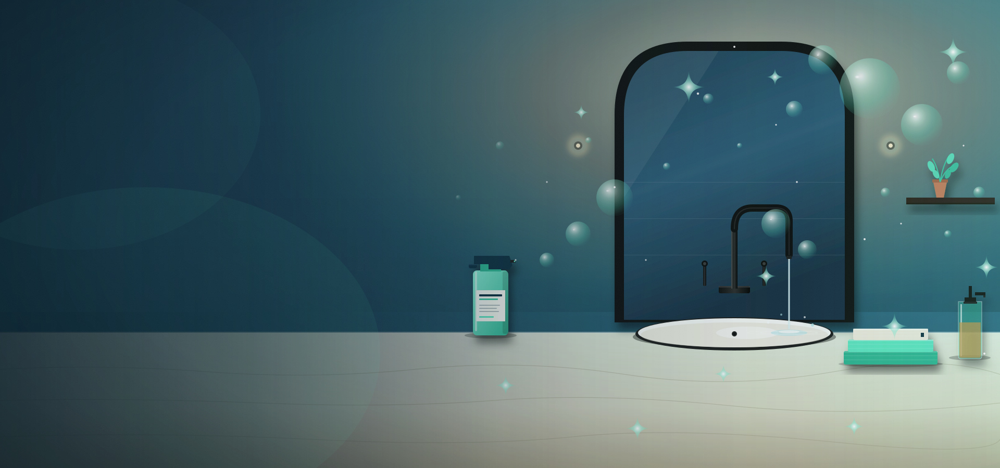

Professional Deep Cleaning Services in Tampa, FL
When a regular wipe-down is not enough, Easy Clean Service delivers a thorough top-to-bottom deep cleaning that reaches every hidden corner of your Tampa home. We get behind furniture, inside appliances, along baseboards, and into the grout lines that accumulate months of buildup. Our trained team uses professional-grade, eco-friendly products to remove the dirt, allergens, and bacteria that everyday cleaning misses. The result is a home that looks, smells, and feels like new.
What Is a Deep Cleaning – and Why Does Your Tampa Home Need One?
A deep cleaning goes well beyond the scope of a standard cleaning visit. While regular cleaning focuses on maintaining everyday surfaces – wiping counters, vacuuming floors, scrubbing toilets – a deep cleaning targets the accumulated grime that builds up over weeks and months in places most people rarely think about. That includes the grease caked behind your stovetop, the dust lining the tops of door frames, the soap scum lodged in shower tile grout, and the allergens trapped inside upholstery and under heavy furniture.
In Tampa’s warm, humid climate, deep cleaning is especially important. The constant moisture in the air accelerates mildew growth in bathrooms, encourages mold in poorly ventilated spaces, and creates the perfect environment for dust mites and allergens to thrive. Homes with pets face additional challenges from dander and hair that settle into carpets, baseboards, and air vents. A professional deep cleaning removes these hidden layers and resets your home to a truly fresh, healthy state.
Most cleaning professionals recommend a deep cleaning every 3 to 6 months, or as a one-time service to establish a clean baseline before transitioning to a regular weekly or biweekly maintenance schedule. Many of our Tampa customers book their first appointment as a deep cleaning and then continue with Easy Clean on a recurring basis.
Deep Cleaning vs. Regular Cleaning: What Is the Difference?
| Area / Task | Regular Cleaning | Deep Cleaning |
|---|---|---|
| Kitchen countertops | Wiped and sanitized | Wiped, sanitized, and degreased |
| Stovetop / oven | Surface wiped | Degreased, interior scrubbed, grates cleaned |
| Microwave | Exterior wiped | Interior steam-cleaned and wiped |
| Refrigerator | Exterior wiped | Exterior + interior shelves wiped and sanitized |
| Cabinets | Fronts wiped | Fronts wiped, tops dusted, inside shelves cleaned |
| Baseboards | Not included | Hand-wiped throughout entire home |
| Ceiling fans / light fixtures | Not included | Dusted and wiped blade by blade |
| Door frames & light switches | Not included | Wiped and sanitized |
| Window sills & blinds | Not included | Dusted, wiped, and detailed |
| Tile grout (kitchen & bath) | Not included | Scrubbed and treated |
| Behind / under furniture | Not included | Moved (when safe) and cleaned underneath |
| Bathroom mirrors & chrome | Cleaned and polished | Cleaned, polished, and hard water stains treated |
| Shower / tub | Scrubbed and rinsed | Scrubbed, grout treated, soap scum removed, fixtures polished |
| Floors | Vacuumed and mopped | Vacuumed, mopped, edges and corners hand-detailed |
What Our Tampa Deep Cleaning Service Includes: Room by Room
We do not cut corners and we do not rush. Here is exactly what our deep cleaning team handles in every room of your home. This checklist is our standard – we use it on every deep cleaning job to make sure nothing gets missed.
Kitchen (Open for the full list)
- Degrease stovetop, burner grates, and range hood exterior
- Clean inside the oven including racks and door glass
- Steam-clean and wipe interior of microwave
- Wipe interior and exterior of refrigerator including shelves and door seals
- Clean and sanitize all countertops, backsplash, and sink
- Scrub sink basin and polish faucet and handles
- Wipe exterior of all small appliances (toaster, coffee maker, etc.)
- Clean cabinet fronts and dust tops of upper cabinets
- Wipe down all light switches, outlet covers, and door handles
- Clean interior of trash can and replace liner
- Detail baseboards throughout the kitchen
- Vacuum and mop floors including edges and under moveable furniture
- Clean light fixtures and any pendant lights
Bathrooms (Toilet, tub, grout, and mirrors)
- Scrub and disinfect toilet including base, hinges, and behind the tank
- Deep-scrub bathtub and shower walls removing soap scum and hard water deposits
- Treat tile grout with targeted cleaning solution and scrub brush
- Clean and polish all chrome fixtures, towel bars, and toilet paper holder
- Clean mirror and medicine cabinet exterior
- Sanitize countertops and scrub sink basin and faucet
- Wipe down cabinet fronts and clean tops of vanity
- Clean exhaust fan vent cover
- Detail baseboards and door frames
- Wash floor on hands and knees with attention to corners and behind the toilet
- Remove and clean shower door tracks if applicable
- Wipe down all light switches and outlet covers
Bedrooms & Living Areas (Top-to-bottom detail)
- Dust all surfaces including nightstands, dressers, shelves, and headboard
- Dust ceiling fan blades and light fixtures
- Wipe down baseboards on all walls
- Clean window sills, blinds, and window tracks
- Wipe all light switches, outlet covers, and door handles
- Vacuum carpet thoroughly including under the bed and along edges
- Mop hard floors including corners and behind furniture
- Dust picture frames, mirrors, and decorative items
- Vacuum upholstered furniture to remove dust and pet hair
- Dust all surfaces including shelving, entertainment centers, and mantels
- Dust and wipe ceiling fan blades and light fixture covers
- Clean all window sills and dust blinds slat by slat
- Wipe baseboards throughout
- Clean all door frames, light switches, and door handles
- Vacuum sofas, cushions, and under cushions
- Vacuum carpet including edges and under accessible furniture
- Mop hard floors with attention to high-traffic paths and corners
- Dust electronics, lampshades, and picture frames
- Clean interior of sliding glass door tracks if applicable
- Remove cobwebs from all ceiling corners and above doorways
“Kessia was very professional, did a great job... My house smells amazing.”
Cristiane Souza · Deep Cleaning Service · November 12, 2025
When Should You Schedule a Deep Cleaning?
- Before or After a Major Life Event: Hosting a holiday gathering, welcoming a new baby, or preparing for a significant celebration. A deep cleaning makes sure your home is guest-ready from top to bottom.
- Seasonal Refresh: Tampa’s spring pollen season and summer humidity can leave a layer of grime on surfaces and allergens in the air. A seasonal deep cleaning every 3 to 4 months keeps your home healthy year-round.
- First-Time Cleaning Appointment: If you are hiring a professional cleaning service for the first time, we recommend starting with a deep cleaning. This establishes a clean baseline that makes ongoing regular cleanings faster, easier, and more effective.
- After Extended Absence or Renovation: Returning from a long vacation or finishing a home improvement project often means dust, debris, and buildup that regular cleaning cannot handle.
- Allergy or Respiratory Concerns: If anyone in your household struggles with allergies, asthma, or respiratory issues, a deep cleaning removes hidden dust mites, pet dander, mold spores, and other irritants that accumulate in carpets, vents, and upholstery.
- Pre-Sale Home Preparation: Getting your home ready for listing photos and showings? A professional deep cleaning makes every room look its absolute best and helps buyers see the full potential of the space.
Our Deep Cleaning Process
- Tell Us About Your Home: Call us at (813) 534-9216 or fill out the estimate form on this page. Let us know your home’s size, its current condition, how long it has been since the last professional cleaning, and any areas that need extra attention. We will provide a clear, no-surprise quote.
- Confirm Your Appointment: Pick a date and time that works with your schedule. We offer weekday and Saturday availability. You will receive a confirmation with your team’s arrival window.
- We Handle Everything: Our team arrives with all professional-grade supplies and equipment. We follow our room-by-room deep cleaning checklist and work systematically from top to bottom, back to front, to make sure nothing gets missed.
- Walk Through and Guarantee: When we finish, you are welcome to walk through with us. If anything does not meet your expectations, we will address it before we leave. Our satisfaction guarantee means your home will look exactly the way you want it.
How Much Does Deep Cleaning Cost in Tampa, FL?
Every home is different, so we provide personalized estimates based on your specific situation. That said, here are typical ranges for deep cleaning services in the Tampa area to give you a starting point:
| Home Size | Typical Deep Cleaning Range | Time Estimate |
|---|---|---|
| Studio / 1 Bedroom | $150 – $250 | 2 – 4 hours |
| 2 Bedrooms / 1–2 Bath | $200 – $350 | 3 – 5 hours |
| 3 Bedrooms / 2 Bath | $250 – $400 | 4 – 6 hours |
| 4+ Bedrooms / 3+ Bath | $350 – $550+ | 5 – 8+ hours |
Factors that may affect your specific quote include the current condition of the home (a home that has not been professionally cleaned in over a year will require more time), the number of pets, special requests such as interior window cleaning or inside-cabinet cleaning, and the total square footage.
Get Your Personalized Deep Cleaning EstimateNOTE: Confirm these price ranges with Kessia before publishing. These are based on Tampa market averages and should be adjusted to reflect Easy Clean’s actual pricing.
Deep Cleaning Questions Tampa Homeowners Ask Us
Deep cleaning in Tampa typically ranges from $200 to $450 depending on the size and condition of the home. A 3-bedroom, 2-bathroom home in average condition usually falls between $250 and $350. Homes that have not been professionally cleaned in a long time or that have heavy pet hair buildup may fall on the higher end. We always provide a clear, upfront estimate before any work begins so there are no surprises. Call us at (813) 534-9216 or fill out the form on this page for your personalized free estimate.
Regular cleaning focuses on maintaining everyday tidiness: dusting accessible surfaces, vacuuming and mopping floors, wiping kitchen counters, and scrubbing bathrooms. Deep cleaning goes significantly further by addressing areas that do not get touched during a regular visit. This includes cleaning inside the oven and microwave, scrubbing grout in tile, dusting individual ceiling fan blades, hand-wiping all baseboards, detailing window sills and blind slats, cleaning behind and under furniture, and sanitizing every light switch and door handle in the home. Think of regular cleaning as upkeep and deep cleaning as a full reset.
A professional deep cleaning typically takes between 4 and 8 hours depending on the size of the home, how many rooms need attention, and how much buildup is present. A smaller apartment or a home that has been maintained with regular cleanings may be closer to 4 hours. A larger home that has not been professionally cleaned in six months or more will take closer to a full day. We will give you a time estimate along with your price quote so you can plan accordingly.
For most Tampa homes, a deep cleaning every 3 to 6 months keeps things in great shape. Homes with pets, young children, or family members with allergies benefit from quarterly deep cleaning. Many of our customers book a deep cleaning as their initial service and then transition to a regular weekly or biweekly cleaning schedule to maintain the results between deep cleans. This combination gives you the best of both worlds: a consistently clean home with a periodic thorough reset.
Yes. Our team arrives fully equipped with all professional-grade cleaning products, tools, and equipment needed for a complete deep cleaning. We use eco-friendly products that are safe for children, pets, and people with sensitivities. No harsh chemical fumes, no toxic residues. If you have a preferred cleaning product or a specific concern about certain ingredients, just let us know and we will accommodate your request.
We ask that you pick up personal items, clothing, and toys from floors and surfaces so our team can focus entirely on the actual cleaning work. If you have pets, please secure them in a comfortable area during the appointment. Beyond that, there is nothing else you need to do. We bring everything and handle the rest.
Absolutely. Many of our Tampa customers book a single deep cleaning for a specific occasion: preparing for holiday guests, listing a home for sale, recovering after a renovation, or simply wanting a fresh start. You are never locked into a contract or recurring schedule. If you decide you want regular maintenance after experiencing the results of a deep cleaning, we are happy to set that up, but there is never any pressure.
Get Your Free Deep Cleaning Estimate
Ready to see and feel the difference a professional deep cleaning makes? Tell us a little about your home and we will get back to you within a few hours with a clear, no-obligation estimate. You can also reach us directly at (813) 534-9216 or message us on WhatsApp anytime.